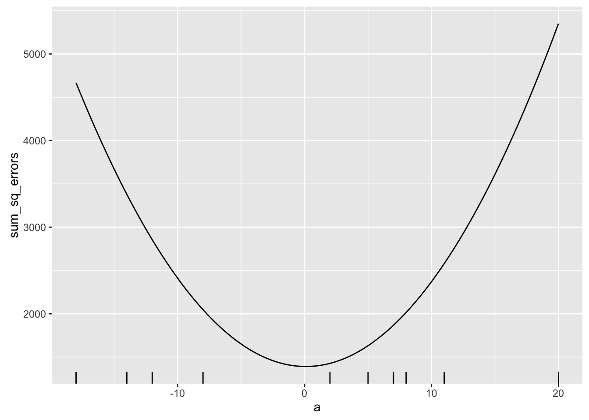
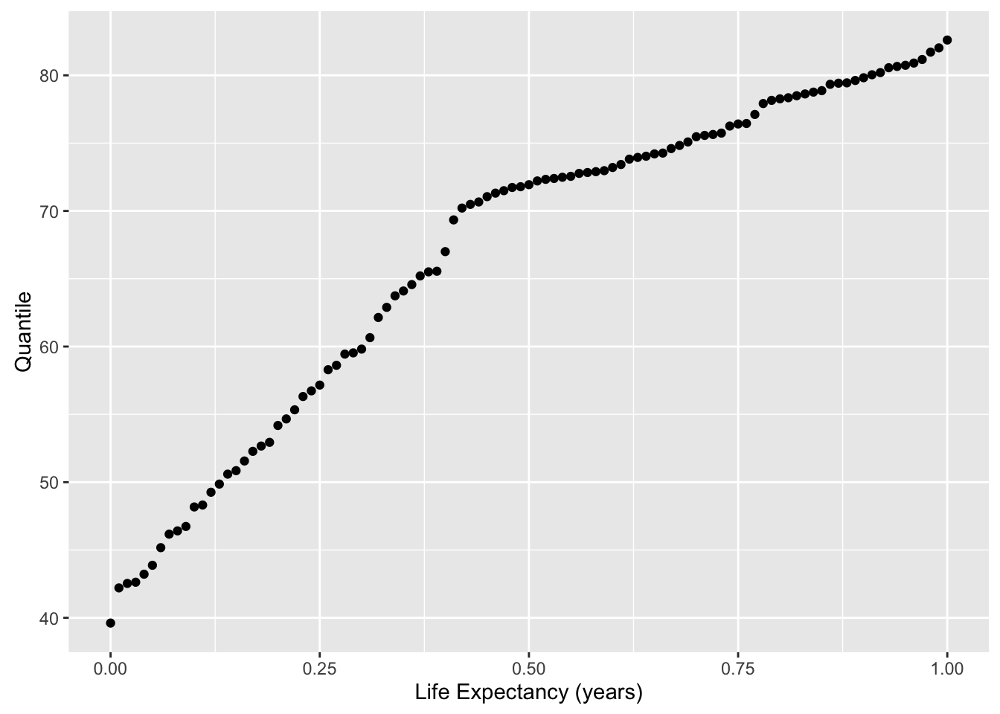
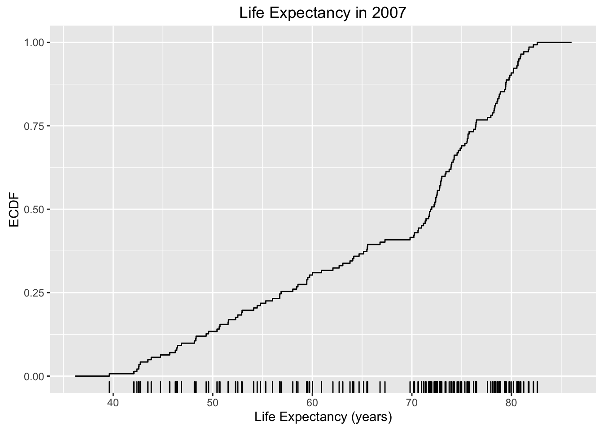
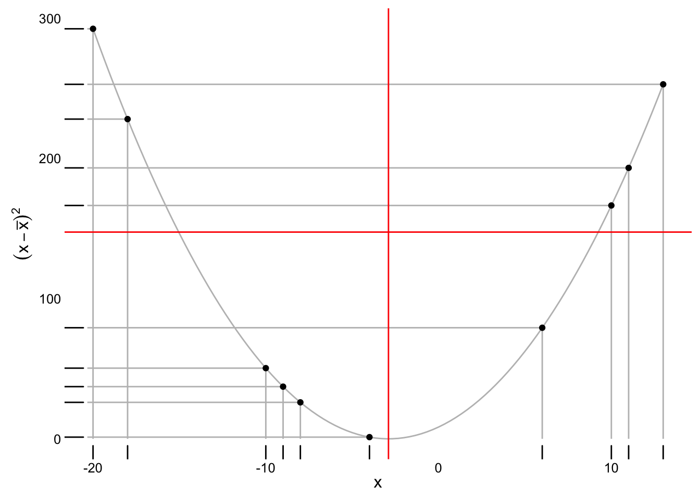

POL S/CS&SS 501, University of Washington, Spring 2015
Descriptive Statistics
Jeffrey Arnold
January 14, 2016
\[ \DeclareMathOperator{\mean}{mean} \DeclareMathOperator{\var}{var} \DeclareMathOperator{\argmin}{argmin} \DeclareMathOperator{\argmax}{argmax} \]
These are some notes that extend the discussion of descriptive statistics in OpenIntro Statistics, Chapter 1, and Statistical Modeling and Inference for Social Science, Chapter 2. They are not a replacement for that material.
We will use the following packages in this section, which we will load now.
library("ggplot2")
library("gapminder")Measures of Central Tendency
Challenge
Let \(x = (4, 2, 8, 3)\) be a vector of data. The mean is \(\bar{x} = \frac{1}{4}\sum_{i = 1}^4 x_i = \frac{1}{4} 17 = 4.25\).
- Consider a new vector with the addition of a new value \(x_5 = 4\). Call this new vector \(x^* = (4, 2, 8, 3, 4)\). What is the mean of \(x^*\)? What is the difference in the means?
- What is difference in means, \(\bar{x}^* - \bar{x}\) in terms of \(x_5\)?
- Now consider the vector \(x' = (4, 2, 8, 3, x_5)\)? What is \(\bar{x}'\)? what is the difference in means \(\bar{x}' - \bar{x}\)?
- Now, consider the general case.
Challenge
Let \(x = (1, 6, 2, -10, 11)\).
- What is the median?
- Add an observation, \(x^* = 4\). What is the new median?
- Add an observation, \(x^* = 1.5\). What is the new median?
- Add an observation, \(x^* = 12\). What is the new median?
- Add an observation, \(x^* = -5\). What is the new median?
- In general, how does the median change with the addition of a new observation? Hint: there are four cases to consider.
Challenge
- What is the definition of the mode?
- What is the mode of continuous variable?
The mean, median, and mode are all measures of a central tendency of a sample. But they can produce different values, so why and how do they differ in the way they define what the “center” of the sample. Let \(d(x_i, m)\) be the distance between each observation in the sample and the middle; \(d(x_i, m)\) is a function that will be equal to 0 if \(x_i = m\) and greater than 0 if \(x_i \neq m\).
The statistics—mean, median, and mode—differ in how they define \(d\).
- Mean: \(d(x_i, m) = {(x_i - m)}^2\)
- Median: \(d(x_i, m) = \left|x_i - m \right|\) where \(\left| a \right|\) is the absolute value of \(a\).
- Mode: If \(x_i = m\) then d(x_i, m) = 0$, otherwise \(d(x_i, m) = 1\) (\(\infty\) or any positive constant will work).
Then to find the value of the statistic find the value of \(m\) that minimizes the sum of \(d(x_i, m)\) for the sample, \[ m = \arg \min_a \sum_{i = 1}^n d(x_i, a) \] using the appropriate definition of \(d\) .
There are better ways to find this, but for pedagical purposes, let’s try the brute force way. Let’s randomly draw some values for a sample.
x <- sample(-20:20, 10, replace = TRUE)
x## [1] -20 -19 -2 6 -12 18 -5 -6 -19 -5Lets start with the mean. What we want to do is for many different values of \(a\), calculate \(\sum_{i = 1}^2 d(x_i, a)\). The mean will be the value of \(a\) that has the smallest value of \(\sum_{i = 1}^2 d(x_i, a)\). Take as given that the mean will be between the minimum and maximum values of the sample. So we will try 100 different values of \(a\) between \(min(x)\) and \(max(x)\),
a <- seq(min(x), max(x), length.out = 100)Now we need to calculate \(\sum_{i = 1}^2 d(x_i, a)\) for each value of \(a\). But first, let’s calculate it for one value of \(a\). The sum of squared errors for \(a = min(x)\) is,
sum((x - min(a)) ^ 2)## [1] 3156To calculate it for many values of \(a\), we will use a for loop. First, we will create a new vector, the same length as \(a\) which will hold the values of \(\sum_{i = 1}^n (x_i - a)^2\) for each value of \(a\).
sum_sq_errors <- rep(NA, length(a))Now, we will loop through each value of \(sum_sq_errors\), calculate the sum of squared errors, and save it to sum_sq_errors.
for (i in 1:length(a)) {
a_i <- a[i]
print(paste("a[", i, "] = ", a[i], sep = ""))
err <- sum((a_i - x) ^ 2)
paste("sum (", a, " - x_i)^2 = ", err, sep = "")
sum_sq_errors[i] <- err
}Let’s plot the values of sum_sq_errors to find the approximate minimum.
ggplot() +
geom_line(data.frame(a = a, sum_sq_errors = sum_sq_errors),
mapping = aes(x = a, y = sum_sq_errors)) +
geom_rug(data.frame(x = x), mapping = aes(x = x), sides = "b") Use the function which to find the location of the minimum value in sum_sq_errors,
sse_loc_min <- which(sum_sq_errors == min(sum_sq_errors))
sse_loc_min## [1] 36The minimum value of the sum of squared errors is
sum_sq_errors[sse_loc_min]## [1] 1306.674But the mean is the value of a with the minimum sum of squared errors,
a[sse_loc_min]## [1] -6.565657This should be very close to the actual mean,
mean(x)## [1] -6.4However, the brute force way of searching for the mean is not necessary. We already know this because we have a formula for the mean! The formula for the mean is found by solving for the value that minimizes the squared errors using calculus.
Challenge
- Edit the code below to find the median of
x.
errors <- rep(NA, x)
for (i in 1:length(a)) {
a_i <- a[i]
# Edit the line below to use the d(x_i, a) for the median
# errors[i] <- ???
}Now plot the valus of errors to find the median.
ggplot() +
geom_line(data.frame(a = a, errors = errors),
mapping = aes(x = a, y = errors)) +
geom_rug(data.frame(x = x), mapping = aes(x = x), sides = "b")## Error in data.frame(a = a, errors = errors): object 'errors' not found- What is the approximate value of the median?
- Use
whichto find the value(s) of the median? - Check your work using the built in function
median.
Challenge
- Reason about how the mode is found? Is it unique?
- Try calculating the mode in R. Use the
modefunction? Is it giving you what you expect? Look at the help ofmodeto find out what is going on. - What function
dwould produce theminimumas the best guess? - What function
dwould produce themaximumas the best guess?
Quantiles
Challenge
- What is definition of the the \(k\)th quantile?
- What are other names of the 0th, 50th, and 75th quantile?
A common plot is the quantile plot. This plots the values of the quantile against the values of the variable.
Let’s look at the quantiles of life expectancy in the gapminder data.
data("gapminder")Let’s focus only on the latest year in the data
gapminder2007 <- gapminder[gapminder$year == 2007, ]The function quantile can calculate the quantiles of the data. E.g. if we wanted to calcalate the 0th, 25th, 50th, 75th, and 100th quantiles of the data,
quantile(gapminder$lifeExp, c(0, 0.25, 0.50, 0.75, 1))## 0% 25% 50% 75% 100%
## 23.5990 48.1980 60.7125 70.8455 82.6030Then we can also plot the values of each quantile.
q <- seq(0, 100, by = 1) / 100
v <- quantile(gapminder2007$lifeExp, prob = q)
ggplot(data.frame(lifeExp = v, q = q),
aes(x = q, y = lifeExp)) +
geom_point() +
xlab("Life Expectancy (years)") +
ylab("Quantile")
Something similar is to plot the empirical distribution function (ECDF). For each value, the ECDF is the proportion of observations less than or equal to it.
ggplot(gapminder2007, aes(x = lifeExp)) +
stat_ecdf() +
geom_rug() +
ggtitle("Life Expectancy in 2007") +
xlab("Life Expectancy (years)") +
ylab("ECDF") The ECDF is the inverse of the quantile plot.
Boxplot
Challenge
- What are the values of the midpoint in a boxplot?
- When is the boxplot useful? When should you plot the raw data instead?
Measures of Spread
Variance is defined as \[ \frac{1}{n - 1} \sum_{i = 1}^n (x_i - \bar{x})^2 \] Let \(e_i = (x_i - \bar{x}^2\) be the squared errors, the square of the difference between each data point, \(x_i\), and the mean, \(\bar{x}\). The variance is approximately the mean of the squared errors, \[ var(x) = \frac{1}{n - 1} \sum_{i = 1}^n (x_i - \bar{x})^2 = \frac{1}{n} \sum_{i = 1}^n e_i^2 \approx \frac{1}{n} e_i^2 = mean(e) \] The difference between the variance and the mean of the squared errors is that the variance divides the sum of squared errors by \(n - 1\) instead of \(n\). The reasons for this is that dividing by \(n - 1\) instead of \(n\) makes the sample variance an unbiased estimator of the population variance (something which we have not covered yet). This adjustment is not necessary for the sample mean, because it turns out to be an unbiased estimator of the population mean.
You can visualize variance using the following plot, which creates a plot with the data, squared errors, mean, and variance.
variance_plot <- function(x) {
x_mean <- mean(x)
errors <- x - x_mean
sq_errors <- errors ^ 2
df <- data.frame(x = x,
sq_errors = sq_errors)
offset <- diff(range(x)) * 0.01
xlim <- range(x) + c(-1, 1) * offset
xseg <- seq(min(x), max(x), length.out = 100)
ggplot(df) +
# Data points on the x axis
geom_rug(aes(x = x, y = sq_errors), sides = "bl") +
geom_segment(xend = x, x = x, y = 0, yend = sq_errors,
color = "gray") +
geom_segment(xend = xlim[1], x = x, y = sq_errors, yend = sq_errors,
color = "gray") +
geom_line(data.frame(x = xseg, y = (xseg - x_mean)^2),
mapping = aes(x = x, y = y), colour = "gray") +
# Line for mean
geom_vline(xintercept = x_mean, color = "red") +
# Line for variance
geom_hline(yintercept = var(x), color = "red") +
# Data points with their squared errors
geom_point(aes(y = sq_errors, x = x)) +
ylab(expression((x - bar(x)) ^ 2 )) +
xlab(expression(x)) +
# minimial theme with no gridlines
theme_minimal() +
theme(panel.grid = element_blank(),
axis.ticks = element_blank())
}Lets randomly draw some numbers and visualize the variance and mean, and squared errors.
set.seed(1234789)
x <- sample(-20:20, 10)
variance_plot(x)
Challenge
How does the variance respond to outliers? What is your reasoning?
Summary of R commands for descriptive statistics
- Mean:
mean - Median:
medianorquantile - quantiles:
quantile - Mode: It is not the
modefunction. - Variance:
var - Standard deviation:
sd - IQR:
IQR - Boxplot: In ggplot:
geom_boxplot - Histogram: In ggplot:
geom_histogram

This work is licensed under a Creative Commons Attribution-NonCommercial-ShareAlike 4.0 International License. R code is licensed under a BSD 2-clause license.